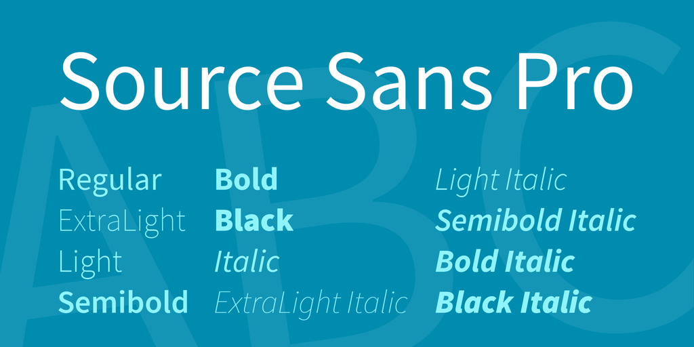

That FLAT UI Style focuses on colors, typography, simple shapes to feature usability and clarity works well with simple but unique fonts. While common typefaces work well in flat ui design, opt for something more unique and attractive appears. If you do want to make your website stand out, does an outstanding typeface will help create an identity for your project. It is very important, in Flat UI Design, to have sharp, flair and flat fonts in a manner that it is bold, simple and straight-forward. Here is the list of typefaces that are fit with Flat design most:
Open Sans is a clean and modern sans-serif typeface. It is designed with open forms and friendly appearance. It is optimized for print, web and mobile interfaces.
Rale way is an elegant also a display sans-serif typeface which has been expanded into 9 weights family such as: thin, extralight, light, regular, bold...
This is a display sans serif. You can have a look at it below:
Source Sans Pro is a sans serif font designed with a generous width. Its shorter majuscule letters, combined with minuscule letters with longer extenders create a more pleasant reading texture in longer text passages..


Lato font is a sans serif typeface family. It consists five weights: 100, 300, 400, 700, 900 plus corresponding italics. Lato gives users a felling of warmth as well as stability and firmness.
Montserrat is a ne`w libre sans text typeface for the web, inspired by the signage found in a historical neighborhood of Buenos Aires. This has two font variants.